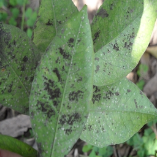
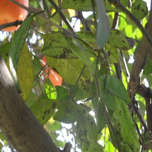

柑橘黑点病
病原：黑点病是由柑橘痂圆孢（Guignardia citricarpa）真菌引起的。
症状：表现为深色的小圆点，果实外观受损，影响市场价值。虽然轻微时可能不会对果实产生严重影响，但仍会显著降低果实的美观度。
预防措施
-
彻底清园：冬季或早春时节，应彻底剪除果园内的病枯枝，特别是树势较弱的果树枯枝。这些枯枝是柑橘黑点病传播的主要媒介，因此必须及时清理并带出果园外集中烧毁，以消除侵染源。同时，清扫地面落叶，并集中处理，以减少病菌的残留。
-
合理修剪：修剪原则保持大枝稀、小枝匀，修剪能够保证通风透光，减少病害发生几率。同时，对于因修剪、虫害等形成的伤口，应及时处理，防止病菌从伤口侵染。
-
科学施肥：采用有机肥与无机肥结合的方式施肥，各施用50%，根据树体需肥规律平衡施肥。有机肥的施用可提高树势，增强树体抗病性。避免长期施用化肥，导致土壤板结、盐渍化现象严重，根系生态恶化，树势衰弱，易感病。
-
改善果园环境：加强果园的通风透光条件，避免果园过于密闭潮湿。同时，做好果园的排水工作，防止果园积水严重，影响根系生长和树势。
药物治疗
-
药剂选择：在柑橘黑点病的防治过程中，应选择有效的药剂进行喷洒。推荐使用的药剂包括矿物油+代森锰锌类、甲氧基丙烯酸酯类杀菌剂（如嘧菌酯、吡唑醚菌酯等）、波尔多液、石硫合剂等。同时，要注意药剂的轮换使用，避免产生抗药性。
-
喷药时期：喷药时期的选择对于防治效果至关重要。一般来说，应在落花后2/3时开始喷第一次药，然后根据天气情况每隔10~20天喷一次，直到果实膨大期结束。如遇雨水较多年份，可适当增加施药次数。在持续降雨过程前也应喷药预防。特别注意，温度高、干旱季节不能添加矿物油，以免发生药害；在转色期慎用，以免推迟果实着色。
-
注意事项：在喷药过程中，要注意药剂的配制方法和浓度控制。配药时，必须等其他药剂都配好后，再添加矿物油，以免产生药害。同时，要确保喷药均匀全面，不留死角。
柑橘黑点病概述图

柑橘黑点病果实

柑橘黑点病叶片
注：图片仅为示例，实际黑点病症状可能因病原体种类、环境条件等因素而有所不同。